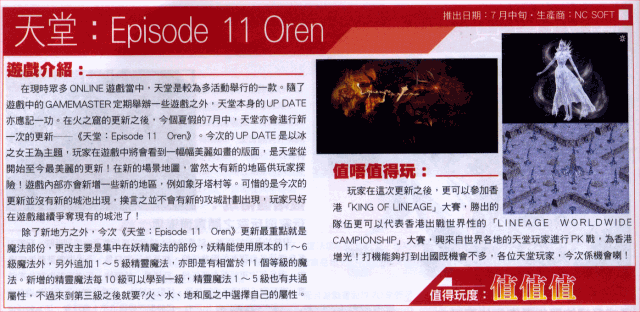

|
2002年6月21日
King of Lineage及Lineage Worldwide Championship比賽
來原：PC Gamewave Vol.52 (24.6.2002)

香港雜誌PC Gamewave最近報導了有關天堂暑假King of Lineage及Lineage Worldwide Championship重頭活動的消息，似乎大家只要勝出King of Lineage比賽，便可以代表香港地區參與世界性的Lineage Worldwide Championship比賽！相信官方很快會公佈有關比賽詳細內容！
另外以下是上年度韓國King of Lineage比賽的海報，該活動的初賽日期大約為2001月7月17曰，而決賽日期為2001年8月26日，本網相信在今年亦會在相近日期舉行有關活動。

|